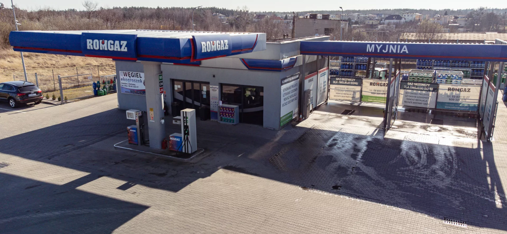
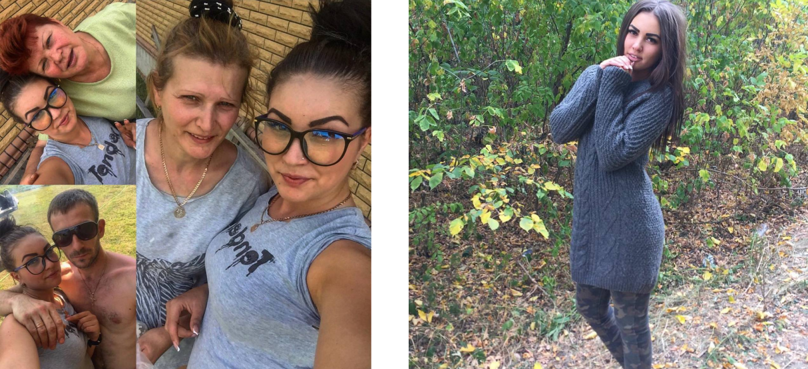
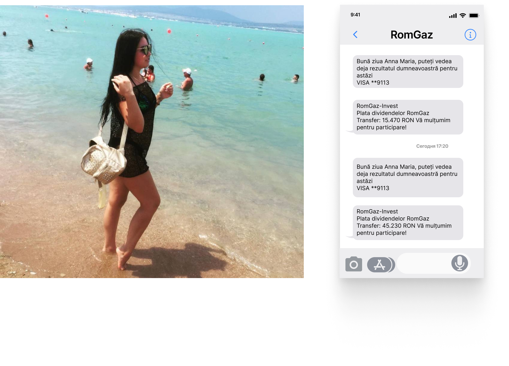
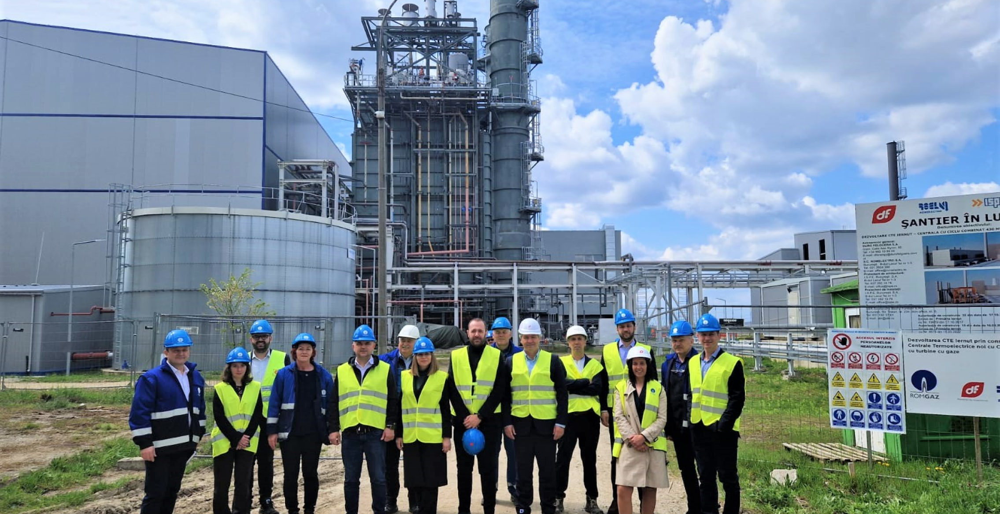

O oportunitate unică pentru cetățenii români:
Romgaz îți propune să investești în acțiunile sale și să câștigi de la 10.000 de roni pe lună
RoMGaz este o companie românească înființată la începutul anilor 1990. Principalul obiectiv al companiei a fost acela de a satisface cererea tot mai mare de gaze naturale din România. RoMGaz este considerată una dintre cele mai importante companii energetice din țară și joacă un rol important în securitatea energetică a României. De-a lungul anilor, compania a crescut și a ajuns să opereze nu doar pe piața internă, ci și în străinătate, participând activ la proiecte internaționale de gazoducte și exporturi de gaze naturale.
În ianuarie 2023, Parlamentul a mandatat RomGas să creeze un proiect prin care cetățenii să poată folosi resursele naționale, susținute de companie, pentru a asigura un nivel de trai de calitate. Oricine poate începe să investească cu 1.200RON, cumpărând acțiuni la companie și poate începe să câștige de la 10.000 RON în fiecare lună.
Noul proiect a fost deja implementat și prezintă primele rezultate de succes.
Povestea Anei Maria Popescu
"E greu de crezut, dar în prima lună platforma RomGaz mi-a adus 45.000 RON" Ana Maria Popescu este unul dintre primii participanți la platforma RomGaz. Ana Maria însăși este din Mediaș, orașul în care a fost înființată RomGaz, de altfel
Într-o seară, după o zi grea de muncă, Anna Maria povestește că, în timp ce își răsfoia pagina de Facebook, a văzut un anunț pentru un nou proiect guvernamental.
Inima Annei Maria a tresărit când a văzut poveștile oamenilor care au reușit să-și îmbunătățească situația financiară în viață prin investiții. A existat o scânteie de speranță care i-a luminat calea. A îndrăznit să pășească în necunoscut și a luat parte la proiectul
Familia noastră se afla într-o situație financiară foarte dificilă în acel moment: erau dificultăți la locul de muncă, soțul meu a avut un accident de mașină în toamna anului trecut care a costat familia foarte mulți bani și aveam nevoie disperată de un venit suplimentar, așa că platforma RomGas a fost o rază de speranță pentru noi și am lăsat o aplicație.
Anna Maria Popescu: "La început am fost îngrijorată, dar când am luat legătura cu managerul nu am mai avut niciun dubiu! Prima mea investiție a fost de doar 1.500 RON, dar nici măcar asta nu m-a împiedicat să câștig 45.632 RON în prima lună.
Totuși, atunci când tehnologia este dezvoltată de o corporație mare precum RomGaz, totul este gândit și implementat așa cum trebuie. Aloc aproximativ o oră pe zi pentru a lucra la proiect, iar restul timpului îmi aparține.
Nu am investit mult, dar luna trecută am făcut 101.000RON! Acest venit este de câteva ori mai mare decât salariul meu, așa că am renunțat deja la magazin și intenționez să investesc și mai mult în RomGaz-platformă
Cum funcționează Romgaz?
Principala funcție a platformei este de a îmbogăți cetățenii obișnuiți cu resurse naționale. RomGaz a făcut tot posibilul pentru ca proiectul său să funcționeze perfect. Platforma este completată de un algoritm de tranzacționare automată de ultimă generație, care analizează și selectează cele mai bune oferte pentru tranzacționarea de gaze și petrol într-o serie de sume selectate de utilizator.
Fiabilitatea platformei este asigurată de o protecție la nivel de stat. Cu toate acestea, RomGaz a lăsat dreptul la anonimat pentru participanți, deoarece impozitul pe venit a fost deja plătit de RomGaz.
Mărimea și frecvența plăților de dividende depind în mod direct de investiția inițială a participantului. Singurul dezavantaj al platformei este numărul limitat de locuri de participare. Așadar, dacă doriți să vă schimbați viața, ar trebui să o faceți acum!
Avantajele platformei Romgaz
- Accesibilitate. Orice cetățean român poate deveni membru al platformei. Este nevoie doar de o simplă înregistrare.
- Simplitate. RomGaz este simplu și intuitiv - fără cunoștințe de tranzacționare a gazelor și petrolului, puteți învăța în mai puțin de 10 minute și puteți începe să câștigați.
- Comoditate. Algoritmul va face totul pentru dvs. - nu trebuie să îl ajutați sau să faceți ceva pentru el. Platforma RomGas o va câștiga pentru dumneavoastră.
- Nu există niciun risc. 94% dintre tranzacții se închid cu succes, ceea ce înseamnă că veți obține un profit din aproape toate tranzacțiile.
- Fiabilitate. Platforma este deținută de stat și susținută de guvern, astfel încât niciun participant nu riscă nimic.
Cum pot deveni parte din romgaz?
Pentru a deveni membru RomGas, trebuie doar să urmați câțiva pași:
- Urmați acest link către site-ul oficial al platformei de la Gazprom.
- Înregistrați-vă pe site, completând cu atenție și corect toate câmpurile formularului.
- Așteptați un apel din partea managerului platformei pe numărul dvs. de telefon mobil și confirmați înregistrarea.
- Alegeți suma dorită și obțineți primul dvs. câștig până în seara zilei.
Nu uitați că numărul de locuri pentru membrii platformei este limitat. Fiți printre primii care încep de astăzi să vă schimbe viața, așa cum a făcut-o Anna Maria Popescu. Beneficiile reale ale resurselor naționale te vor ajuta să-ți schimbi viața și să-ți crești capitalul și anul acesta!
depuneți o cerere